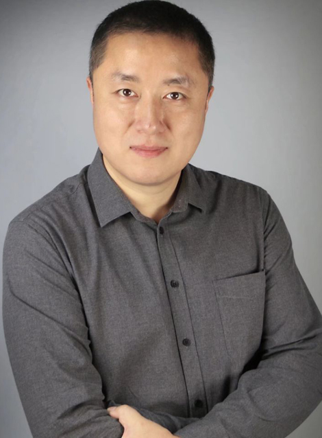
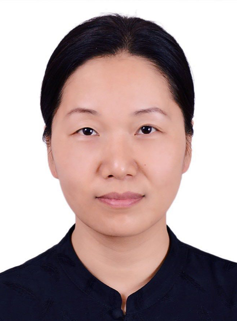

教学服务团队主要成员
-

张葳
所在单位：湖北工业大学艺术设计学院
承担任务：实验方案设计、开发管理
- 教授、环境设计系主任
- 硕士生导师、项目主持人
1968年出生，云南昆明人1991年毕业于中央工艺美术学院，清华大学访问学者中国工艺美术家学会理论委员会会员研究方向：建筑与室内空间设计、设计理论国家社科基金项目主持人，主持、参与多项国家、省部级研究课题，编著多部教材及撰写多篇学术论文先后获得湖北工业大学＂十佳优秀教学质量＂二等奖和一等奖 -

刘涛
所在单位：湖北工业大学艺术设计学院
承担任务：实验项目开发管理
- 讲师、竞赛办主任、研究生
1975年出生，湖北武汉人1999年毕业于湖北工业大学环境设计本科， 2007年湖北工业大学环境设计研究生同济大学访问学者研究方向：建筑与室内空间设计、环境照明设计参与多项国家社科基金项目、国家艺术基金项目、教育部人文社科项目研究课题，编著多部教材及撰写多篇学术论文指导学生参加国家级竞赛获奖20余项 -

李平
所在单位：湖北工业大学艺术设计学院
承担任务：实验项目开发管理
- 讲师、研究生
1978年出生，湖北荆州人2001年湖北工业大学环境设计本科， 2004年湖北工业大学环境设计研究生同济大学访问学者研究方向：建筑与室内空间设计、环境照明设计参与多项省部级研究课题，编著多部教材及撰写多篇学术论文指导学生参加国家级竞赛获奖20余项 -

汤留泉
所在单位：湖北工业大学艺术设计学院
承担任务：实验项目开发管理
- 讲师、研究生
1980年出生，湖北武汉人2003年湖北工业大学环境设计本科， 2007年湖北工业大学环境设计研究生研究方向：建筑与室内空间设计、装饰材料构造与设计参与多项国家社科基金、省部级、校级研究课题，编著多部教材及撰写多篇学术论文指导学生参加国家级竞赛获奖10余项 -

李映彤
所在单位：湖北工业大学艺术设计学院
承担任务：实验方案设计、实验教学
- 副教授、硕士生导师
1969 年生于，上海人1995年毕业于湖北工业大学，同济大学访问学者研究方向：园林景观设计湖北省美学学会会员，武汉“意研堂”创始人，中国“园宅”概念缔造者主持及参与多项国家、省部级研究项目，出版多部著作、教材及撰写多篇学术论文
教学服务团队其他成员
-

王欣
所在单位：湖北工业大学艺术设计学院
承担任务：实验项目开发管理
- 艺术设计学院副院长
- 副教授、硕士生导师
1977出生，湖北浠水人2001年毕业于湖北工业大学艺术设计学院中国流行色协会会员、中国色彩教育指导委员会委员、湖北省工艺美术协会会员研究方向：艺术品设计主持并参与国家级和省部级研究项目，编著多部教材及撰写多篇学术论文获湖北省教育教学成果二等奖，先后参加国内外专业展览并获各级奖20余项 -

饶鉴
所在单位：湖北工业大学艺术设计学院
承担任务：实验项目开发管理
- 艺术设计学院副院长
- 教授、博士生导师
1980出生，湖北武汉人2002年毕业于湖北工业大学环境设计专业研究方向：品牌设计与策划、智能艺术校南湖学者学术带头人、校发展规划专家委员会委员、校教学督导委员会委员承担一百余项城市设计、品牌运营项目出版著作7部，发表论文30余篇，主持参与教科研课题40余项，国内外竞赛获奖30余项，指导学生获奖多项，指导学生创办企业多家 -

李继春
所在单位：湖北工业大学艺术设计学院
承担任务：实验项目开发管理
- 教授、硕士生导师
1962出生，湖北荆州人1986年毕业于湖北工业大学，清华大学访问学者教育部学位与研究生教育评估工作专家库成员，省财政厅政府采购专家库成员研究方向：城市公共空间设计、展示设计及其理论主持并参与多项省部级研究项目，撰写多篇学术论文 -

庹开明
所在单位：武汉开明空间设计有限公司
承担任务：实验项目开发管理
- 电气设备负责人
1981年出生2004毕业于武汉理工大学艺术设计学院，2007湖北工业大学艺术设计学院硕士研究生。武汉开明空间设计有限公司创始人、设计总监主要主要从事酒店、办公、售楼部、商业、别墅等场所的建筑室内空间设计 -

王琳
所在单位：湖北康晶宏太建筑工程有限公司
承担任务：实验数据收集
- 设计主管
1977年出生1998毕业于湖北工业大学土建学院，2007湖北工业大学艺术设计学院硕士研究生毕业湖北奥科视听工程有限公司设计总监主要从事专业舞台灯光，视频系统、体育场馆扩声、大型公共广播系统、舞台机械与幕布系统、数码影院系统设计